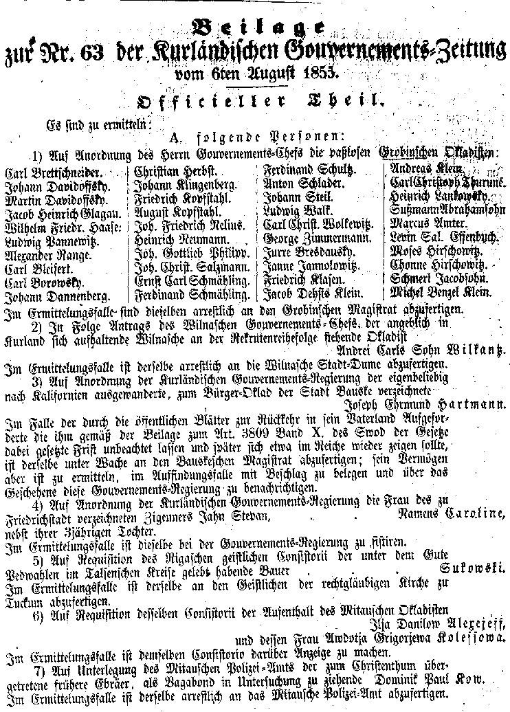
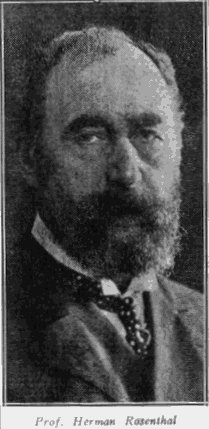

This database consists of 990 male Jews, declared to be "Passlosen" or "without lawful permit" in the official Russian Government Gazette for Kurland Gubernia, the Kurlandskya Gubernskie Vedomosti.
These lists were first identified in the course of the more general project of the Courland Research Group to index all entries relating to the Jewish Community in Courland (now Latvia) appearing in the official Russian Government Gazette (the Vedomosti) for the period from 1853-1900.
We believe that the "Passlosen" or "Without lawful Permit" lists are of sufficient historical and genealogical importance that they merit being published as a free standing database prior to the completion of the Vedomosti index database.
The lists are organised on a town by town basis and were published throughout the summer of 1855. In chronological order they appeared as follows:
| Date of Publication | Town Name 1855 | Modern Name | Number of Jews |
|---|---|---|---|
| 29th June 1855 | Hasenpoth | Aizpute | 16 |
| 29th June 1855 | Bauske | Bauska | 72 |
| 6th July 1855 | Tukum | Tukums | 162 |
| 9th July 1855 | Goldingen | Kuldiga | 109 |
| 9th July 1855 | Libau | Liepaja | 23 |
| 9th July 1855 | Pilten | Piltene | 11 |
| 3rd August 1855 | Friedrichstadt | Jaunjelgava | 363 |
| 3rd August 1855 | Jakobstadt | Jekabpils | 99 |
| 6th August 1855 | Grobin | Grobina | 7 |
| 20th August 1855 | Mitau | Jelgava | 127 |
| TOTAL | ALL TOWNS | 990 | |

The Jews of Courland lived outside the Pale but had to be lawfully registered in the towns in which they lived. The residence permit or pass system appears to have been administered by the local Kahal or Jewish administrative authorities for each town or city. The Kahal in turn was answerable to the Russian Civil Authorities who laid down the criteria and requirements.
Jews from the Pale were not permitted to serve in the military until 1827. They paid a tax in lieu of military service. Courland, however, was not in the Pale of the Settlement and the same regulations did not apply. Courland Jews were not banned from military service but were permitted to pay a sum of money in lieu of actual service. Alternatively, in common with other communities they could pay a substitute to do military service in their place. In addition a complicated system of exemptions had grown up. See the Courland Family lists.
This relatively relaxed position changed under the reign of Tsar Nicholas I [1825-1855]. He pursued a policy of conscripting large numbers of Jewish males to serve a compulsory 25 year term of military service. Boys as young as 12 were eligible to be called. There is anecdotal evidence of Jewish boys younger than 12 being removed from their homes pursuant to this policy.
The Kahal, which survived in Courland until the 1860s, was charged with the duty of selecting which recruits would be chosen from the Recruits Enlistment Registers. They had no choice but to co-operate with the government authorities in this hated duty because the sanctions imposed in the case of default were worse than refusing to co-operate in the first place. In particular:
The Vedomosti has numerous examples of the hardships that these policies caused and the impact that it had on ordinary Jewish people. Regular announcements are found in the years 1853-1856 of named individuals fleeing military service or failing to turn up for duty. These can be very poignant.
For example the following extracts are all found in the Vedomosti:
As the Crimean war continued these announcements increase. It is notable however that avoidance/evasion of military duty was not a phenomenon of the Jewish community only. Many of those listed for military default of one sort or another in the Courland Vedomosti were in fact non-Jews.
Jews did not only appear in the Vedomosti for default. One entry in 1855 thanks the Jewish merchants of Mitau, Eckstein, Friedlander, Friedlieb, Goldberg, Jacobs, Kallmeyer, Klein, Kretschmann, Levinsohn, Lippert, Salzmann, Schmahmann, Stern and Taube, who contributed the sum of 800 roubles for the relief of wounded soldiers. See illustration: Kurlandskaya Gubernskie Vedomosti, June 15, 1854: Report of the Jewish donors to the Fund for Wounded Soldiers.

The best evidence that we have is an account by Herman Rosenthal, (born 1843 Friedrichstadt, died 1917 New York). Rosenthal became the head of the Slavic and Baltic Division of the New York Public Library and wrote extensively about the history of the Russian Jews and was an expert in the Jewish history of Courland. His major review articles are found in the major Funk & Wagnalls Jewish Encyclopaedia published in 1904 [and 1916] of which he was an editor.
Rosenthal was a gifted scholar, linguist and historian. The longest of the lists of Jews without lawful permit was drawn up relating to Jews in Friedrichstadt, where Rosenthal was born. In 1855 when the Friedrichstadt Passlosen list was published Rosenthal would have been 12 or 13 and just old enough to be eligible to be called as a recruit. The policy of recruitment and the enforcement of military obligations must have been discussed in the Rosenthal household. It seems reasonable to infer that when Rosenthal makes mention of the recruit policy that he speaks from at least some vivid personal knowledge.
It appears from the account given below that the Kahal was the likely source of the list of Jews without lawful permit. The account he gives of the Russian Government's conscription policy towards the Jews is one he was likely to have experienced at first hand. He tells us that:
"... From 1853 the Kahal was empowered to seize within their own district all the Jews who had no passports and belonged to other Jewish communities, and to enrol them in their own quota of recruits. The Kahal had no alternative save to enforce the law as it stood. For every recruit who failed to report for duty or who fled military duty the Kahal had to furnish 2 young men in their place. In addition arrears of tax were punished by imposing a further burden in terms of an additional levy of recruits.
"The heads of families whatever their standing, had the right to seize such Jews and to deliver them to the authorities as substitutes for themselves or for members of their families. Among other objects the government thereby intended to rid itself of those Jews whom the Kahals refused to supply with passports in order avoid the increase of tax and conscription arrears."
If the account given by Rosenthal is correct then the lists of "passlosen" was a list drawn up by the Kahal backed by the authority of the Tsar which served to enforce the conscription of Jewish Recruits. Precisely what happened to the people on the list is something that we hope further research will tell us.
These enforcement measures were likely to have had a pernicious effect on the Jewish community as they encouraged Jew to turn against Jew. The decline in the popularity of the Kahal can be linked to their role as enforcers, however reluctant, of the system of military conscription and their role in the collection of government taxes.
The worst of the abuses of military conscription passed with the death of Nicholas I in 1885 and the end of the Crimean War in 1886.
The Courland Research Group has a photocopied set of all Jewish entries between 1853 and 1859 and continues to receive material. The originals of these newspapers are frail and are rapidly perishing as the newsprint from the time is not of particularly good quality. We are looking to see how scans of pages relevant to individual geneaological searchers can be made available.
A warm thank you to those who assisted in the databasing of this material, in particular Kathy Wolfson [USA], Charles Nam [USA] and Martha Lev-Zion [Israel] transcribed the lists from their Gothic style Fraktur script and entered it into the excel templates. Max Michelson [USA] has contributed numerous translations and continues to provide support and advice. Michael Whippman [UK] has extracted nearly 1,000 additional entries in order to create the index of names to all Jewish entries between 1853-1859 and continues with this work as new photocopies are obtained from the Vedomosti.
I am grateful to the New York Public Library for information and background about Professor Herman Rosenthal who was the head of the Slavonic Department of the library from 1900 until his death in 1917.
The Courland Research Group also wishes to express its thanks to Warren Blatt for support and assistance. Any mistakes of fact or interpretation are the author's and not his. We also acknowledge our indebtedness to Michael Tobias, our Webmaster.
Constance Whippman, Database Co-ordinator
Copyright ©2000, Courland Research Steering Committee
Last Updated: Jan 6, 2026
{kind=link}